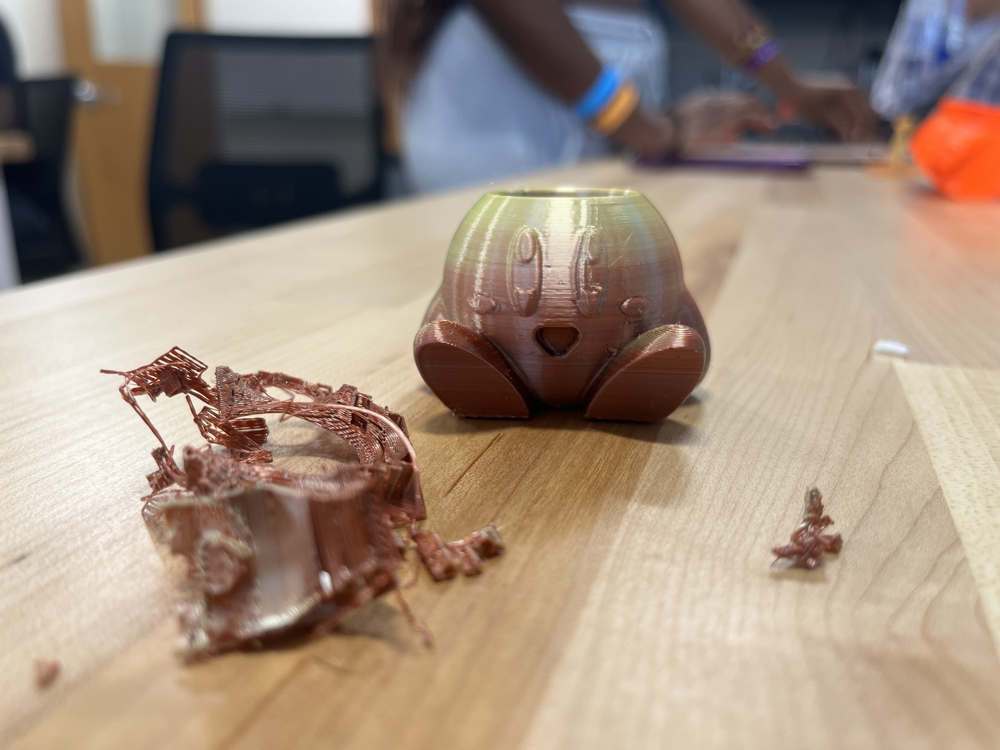

Design Thinking Methodology with Chairs!
Before delving into the first activity of my engineering career, I must say… this was perhaps the best way I could have possibly started in my introduction to design thinking methodology. I was immediately captivated by this new way of thinking which I had never encountered prior to this experience.
Overall, design thinking methodology can be summarized by 6 words: empathize, design, ideate, prototype, test, and implement. In completing this first activity, I was able to experience, hands-on, what is like to actively implement this process to the engineering process.
So what exactly did we do in our first activity? Well we built chairs of course! Together my partners and I began by considering the needs of our first “customer”, Bart Simpson. Like most students have felt at one point or the other in their academic career, Bart was feeling a bit sore from having to sit in an uncomfortable chair for hours on end as he listened to his class lecture. Being students ourselves, we immediately felt for Bart and his struggle to maintain focus in such an uncomfortable chair! We thought: what are those things about this chair that are likely annoying him? Perhaps it’s too stiff. Or maybe there is nowhere to put his bookbag… This led us immediately into our second step which was defining those things that could use an improvement. Soon followed ideation, where we drew out and documented our various ideas, then organized them by necessity, and implementability. Next was the fun part – building a prototype! We built our first prototype out of entirely pipe cleaners, therefore encouraging creativity as we navigated through our material restraints. Our second prototype was made out of cardboard, and it did not necessarily do as planned as when we put it through not-so-rigorous testing. We found that despite being our second iteration of chair, it was not as structurally sound as our first prototype, and that’s okay!! We learned that the design process is not always a linear climb towards improvement. Sometimes we face difficulties and we learn what works and what doesn’t. We hope to learn enough from this engineering course, that we can begin to implement and put our visions into realities.
Building the Prusa Mini 3D printer
I must admit, when it came to constructing the Prusa Mini, it took a little longer than expected to gain a full understanding of how the manual presented the instruction material. Some things that confused me at first included the colored bullet points – which I found silly since the corresponding arrows for each color were very thin and hard to identify – and which parts they were asking for from step-to-step. Although there were names to the parts, the naming scheme felt unintuitive and confusing, especially that of the screws. We ended up using the size chart more than anything else in the process of constructing the Prusa Mini. Additionally, when it came to the really confusing parts of the manual, my partner and I just had to use our intuition as to where a particular part went in the construction. Other, more specific parts of assembly that were difficult to grasp included: fitting the LCD cable in the electronics box given an inconvenient opening slot and supplying PLA filament into the PTFE tube. I would’ve liked to have a “common mistakes” blurb that accompanied any hard-to-understand or difficult-to-accomplish parts of the manual. I should also mention that without the advice of “mise en place” I think we would’ve had an even harder time with the construction process. For this reason, I will ensure to employ this process in my future construction endeavors. Overall, the experience was frustrating, but in the end, the printer worked well and we felt quite accomplished.
And we're almost there... yes!
Benchy Boat!
After downloading the official STL file for the Benchy torture test boat, we opened it in PrusaSlicer and ensured that the print settings were set to the appropriate model 3D printer. I was then able to proceed to save the file onto a hard drive and then plug it into an available 3D printer. This is where my partner and I began to run into problems! Unfortunately, in our attempt to calibrate the nozzle height, we put it too low and during the calibration test, the 3D printer laid down the PLA way too close to the heated plate. Unfortunately, this meant we had to use a very dangerous and sharp scraper to remove the material from the plate (with permission from the instructor of course!). After calibrating our settings to an appropriate height (0.993mm seemed to work perfectly), we were able to successfully print our first Benchy model, which was durable, had minimal stringing, and overall came out looking fantastic! The purpose of this test was to “Torture” / push our printer to its limits, so that we know it’s working properly. Note: Parameters for this print are under “Speed Running a Benchy Boat” if you’re curious.
Speed Running a Benchy Boat!
This time around, I attempted to print a 3D Benchy boat as fast as possible. When exporting the finished product to the hard drive, I neglected to change the material settings in Prusa Slicer to the PLA. I had also forgotten to change the settings to match the correct 3D printer. Luckily I caught this mistake before printing, although I did have to redo all my settings (how annoying..!). Overall, the print was completed in 34 minutes with no major issues. In comparison to the 1st Benchy boat, this print was more flimsy, but overall the structural integrity of the boat was sound and has held up inside the treacherous environment that is the inside of my backpack! All in all, I am very happy with this print.Here are some parameters I changed to decrease the print time – Infill: 5%, Print settings: 0.20mm SPEED (modified), Layer Height: 0.39mm, First Layer Height: 0.39mm, Vertical Shells: 1, Horizontal Shells: Top and Bottom = 1
Decreased print time usually means a decrease in structural integrity and strength. Here are the settings of my original (and stronger) Benchy boat: Infill: 20%, Print settings: 0.20mm SPEED (modified), Layer Height: 0.2mm, First Layer Height: 0.2mm, Vertical Shells: 2, Horizontal Shells: Top = 5 & Bottom = 4
Kirby!
Before we move on to our next large endeavor, our class wanted to once again ensure that the parameters set up on Prusa Slicer were in a sound configuration before moving on to a much larger and time consuming print. We tried to keep our prints to about an hour which meant that most of our prints were relatively small. I chose to print out a mini “Kirby pencil holder” which took an hour and fourteen minutes to complete. Overall, this print came out looking pretty fantastic! Admittedly, it is too small to be a pencil holder, but the print is structurally sound and very durable. The image below shows some of the support that was removed during post-processing.
Here are the parameters to my Kirby print: Infill: 5% (infill not super necessary since this is a hollow print. Will also decrease print time), Print settings: 0.20mm SPEED (modified), Layer Height: 0.2mm, First Layer Height: 0.2mm, Vertical Shells: 2, Horizontal Shells: Top = 5 & Bottom = 4, support material enabled to resolve overhang issue, Brim: 0.2mm to prevent warping
We're halfway there:
Final Product:
A Summary of my Experiences so Far
Since arriving at my first engineering class at Brandeis, I have learned an incredible amount about how to work effectively with my peers, follow instructions, iterate, print, troubleshoot, maximize efficiency, and build a website! This class also brought me many first-time experiences and has therefore brought much-needed excitement to my otherwise very unvaried and repetitive schedule. With these new experiences have come new ways of thinking that challenge those of my past, and will prove effective in insighting creativity and transforming my visions into reality by use of ingenuitive solutions. One might ask where most of this learning comes from. Ultimately, while I have learned a tremendous amount from the LinkedIn learning modules, I have to say that most of my learning comes from this class’ hands-on experiences in addition to my own mistakes and observing the mistakes of others. I fervently believe that these skills will be very fruitful in my future career as a biomedical engineer, and hope to continue with similar experiences moving forward.
CAD Screenshots
Note: Details about Prusa Screenshots / Parameters Mentioned Above